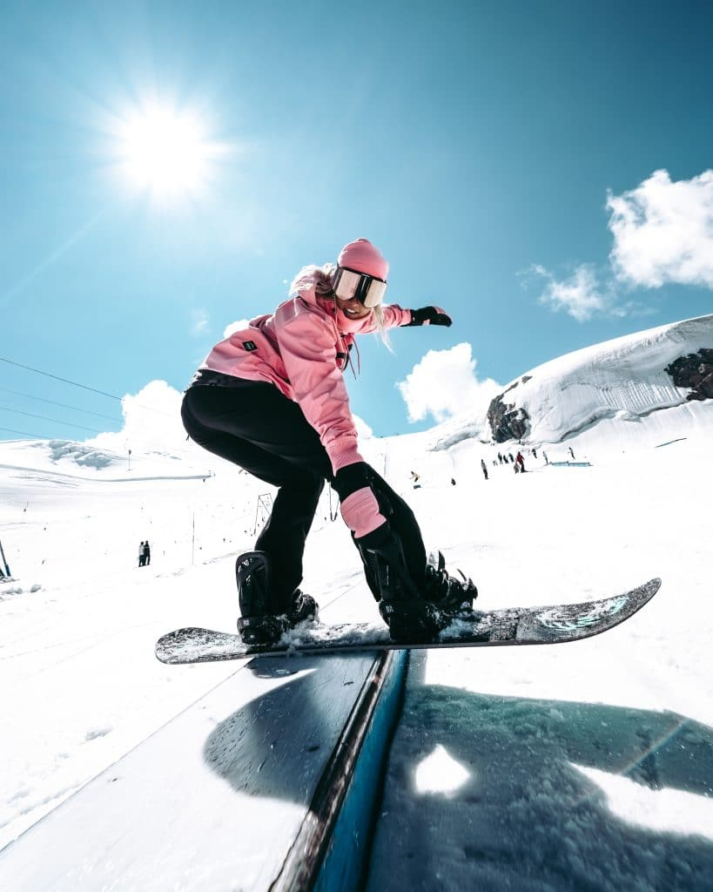
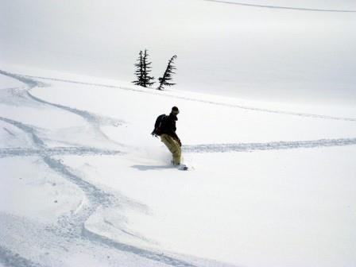
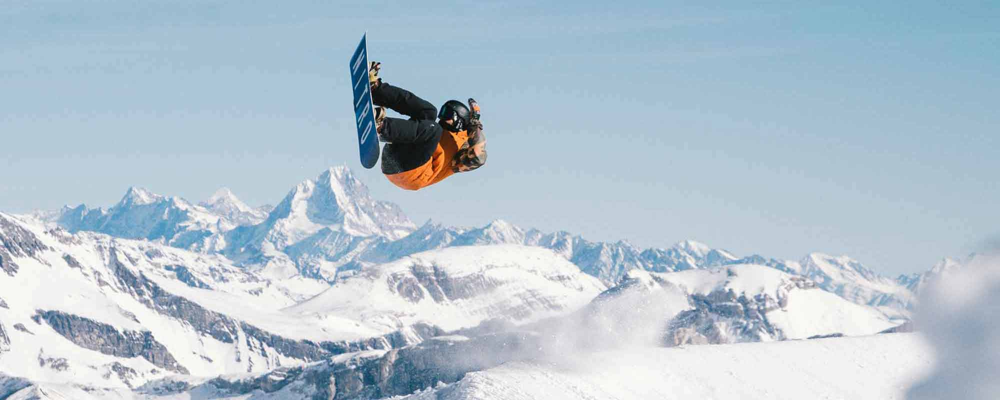
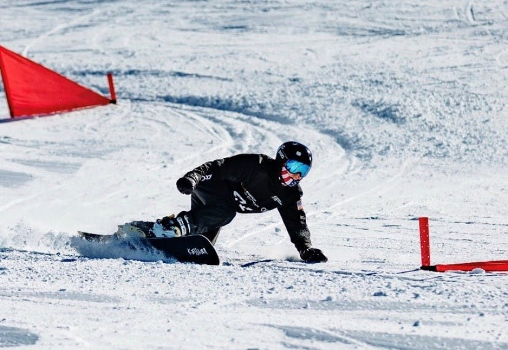
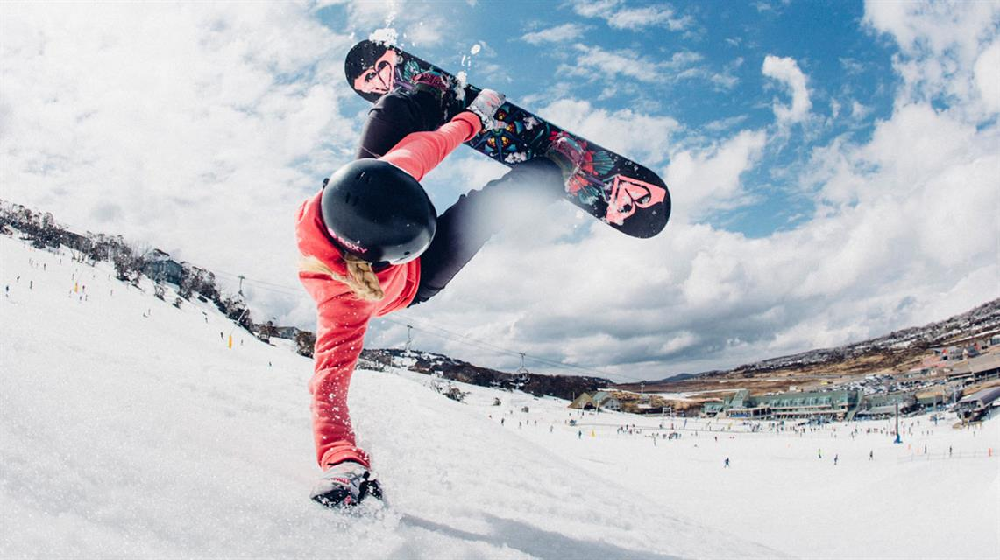
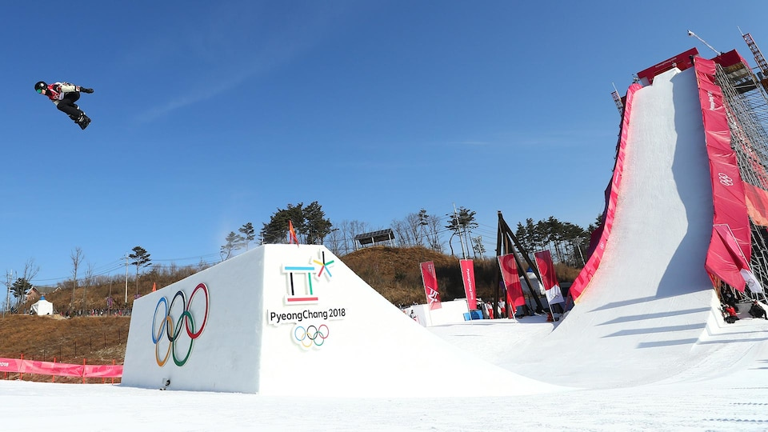
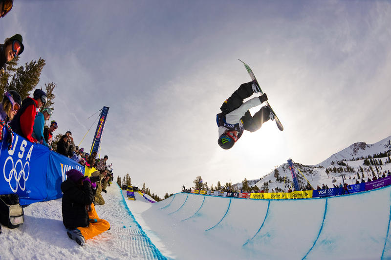
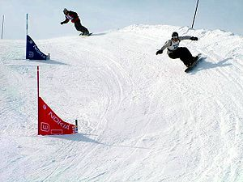
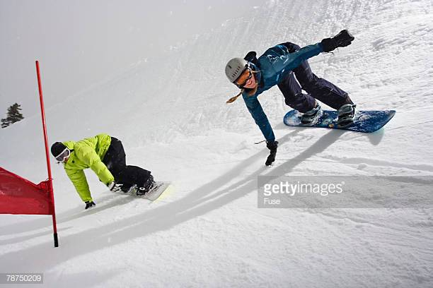

Jibbing
"Jibbing" is the term for technical riding on non-standard surfaces, which usually includes performing tricks. The word "jib" is both a noun and a verb, depending on the usage of the word. As a noun: a jib includes metal rails, boxes, benches, concrete ledges, walls, vehicles, rocks and logs. As a verb: to jib is referring to the action of jumping, sliding or riding on top of objects other than snow. It is directly influenced by grinding a skateboard. Jibbing is a freestyle snowboarding technique of riding. Typically jibbing occurs in a snowboard resort park but can also be done in urban environments.
Freeriding
Freeriding is a style without a set of governing rules or set course, typically on natural, un-groomed terrain. The basic allows for various snowboarding styles in a fluid motion and spontaneity through naturally rugged terrain. It can be similar to freestyle with the exception that no man-made features are utilized. See also Backcountry snowboarding.
Freestyle
Freestyle snowboarding is any riding that includes performing tricks. In freestyle, the rider utilizes natural and man-made features such as rails, jumps, boxes, and innumerable others to perform tricks. It is a popular all-inclusive concept that distinguishes the creative aspects of snowboarding, in contrast to a style like alpine snowboarding.
Alpine snowboarding
Alpine snowboarding is a discipline within the sport of snowboarding. It is practiced on groomed pistes. It has been an Olympic event since 1998. Sometimes called freecarving, this takes place on hard packed snow or groomed runs and focuses on carving linked turns, much like surfing or longboarding. Little or no jumping takes place in this discipline.
Slopestyle
Competitors perform tricks while descending a course, moving around, over, across, up, or down terrain features. The course is full of obstacles including boxes, rails, jumps, jibs, or anything else the board or rider can slide across. Slopestyle is a judged event and winning a slopestyle contest usually comes from successfully executing the most difficult line in the terrain park while having a smooth flowing line of difficult, mistake-free tricks performed on the obstacles. However, overall impression and style can play factor in winning a slopestyle contest and the rider who lands the hardest tricks will not always win over the rider who lands easier tricks on more difficult paths.
Big air
Big air competitions are contests where riders perform tricks after launching off a man made jump built specifically for the event. Competitors perform tricks in the air, aiming to attain sizable height and distance, all while securing a clean landing. Many competitions also require the rider to do a complex trick. But not all competitions call for a trick to win the gold; some intermittent competitions are based solely on height and distance of the launch of the snowboarder. Some competitions also require the rider to do a specific trick to win the major prize. One of the first snowboard competitions where Travis Rice attempted and landed a "double back flip backside 180" took place at the 2006 Red Bull Gap Session.
Half-pipe
The half-pipe is a semi-circular ditch dug into the mountain or purpose-built ramp made up of snow, with walls between 8 and 23 feet (7.0 m). Competitors perform tricks while going from one side to the other and while in the air above the sides of the pipe.
Boardercross
Boardercross, also known as "Boarder X" and "Snowboard X", is a very popular but relatively recent winter sport, starting in the 1980s and earning its place as an official Winter Olympic sport in the 2006 Turin games. In Boardercross, several riders (usually 4 to 6) race down a course similar to a motorcycle motocross track (with jumps, berms and other obstacles constructed out of snow on a downhill course). Unlike traditional head-to-head races, competitors use the same terrain, sometimes resulting in accidental collisions.
Snowboard racing
In snowboard racing, riders must complete a downhill course constructed of a series of turning indicators (gates) placed in the snow at prescribed distances apart. A gate consists of a tall pole, and a short pole, connected by a triangular panel. The racer must pass around the short side of the gate. There are 3 main formats used in snowboard racing including; single person, parallel courses or multiple people on the course at the same time.